Mise en page avec CSS
- MON
- 2023-2024
- temps 1
- William Lalanne
Dans ce MON je souhaite approfondir mes connaissances en CSS
Niveau : Facile Prérequis : Bases en HTML et CSS
Sommaire
- Introduction
- Les Grid
- Les Flexbox
- Ajustement manuel de la position
- Conclusion
1. Introduction
Pour ce premier MON, je me suis servi de plusieurs ressources afin de tirer le meilleur de chaque document. Voici les sites que j'ai utilisé :
- Openclassroom
- CSS-Tricks Complete guide to Grid
- CSS-Tricks Complete guide to Flexbox Dans ce MON, je voulais approfondir mes connaissances en CSS et particulièrement sur les Grid, les Flex-box qui sont des éléments très importantsp pour structurer une page web.
2. Les Grid
Qu'est ce que c'est et à quoi ça sert ?
Lorsque l'on veut coder une page web, il faut que chaque élément de la page soit à la bonne place. La disposition des éléments dans la page est difficile à gérer, mais plusieurs outils permettent de nous faciliter la vie. Par exemple, il peut être utile d'utiliser une grid, ou un tableau en français. Un tableau est un ensemble de lignes et de colonnes de différentes tailles dans lequel on peut mettre des éléments de la page. Le plus simple pour comprendre est de prendre un exemple : 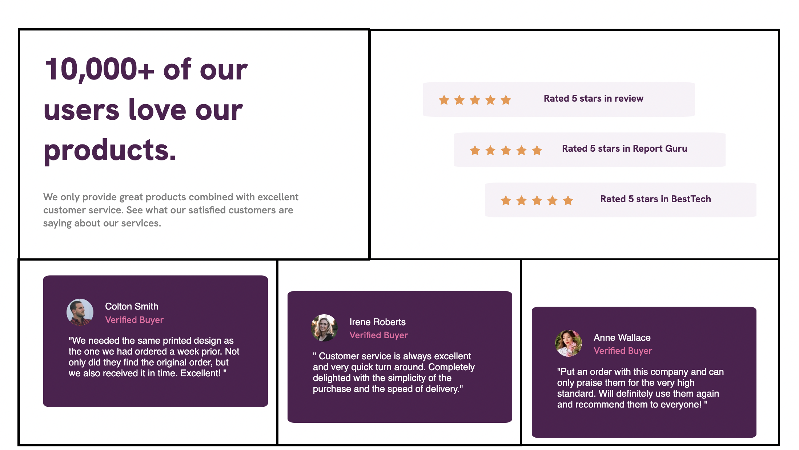
Dans l'image précédente, on peut voir que la page web est constituée d'un tableau qui permet de disposer de manière simple les différents éléments voulus.
Créé un tableau
Pour créer un tableau, il faut d'abord créer un container c'est un élément HTML qui va contenir d'autres éléments, comme c'est le cas dans l'exemple suivant :
<div class="container">
<div>Premier élément</div>
<div>Deuxième élément</div>
<div>Troisième élément</div>
<div>Quatrième élément</div>
</div>Pour l'instant on a simplement créé un élément avec d'autres à l'intérieur, il faut ensuite préciser que cet élément est un tableau. Pour cela, dans le fichier CSS il suffit d'une simple ligne de code :
.container {
display: grid;
}Cette ligne permet simplement de dire que l'élément de class "container" doit être considéré comme un tableau.
Modifier les propriétés du tableau
Une fois le tableau créé, on peut jouer sur plusieurs propriétés pour le modifier. Il existe des propriétés qui s'appliquent à l'ensemble du tableau, donc au container, d'autres aux éléments qui constituent le tableau. Examinons l'exemple suivant avec quelques propriétés du container :
.container {
display: grid;`
grid-template-columns: 500px 500px;
grid-template-rows: 100px 500px;
gap: 30px;
}- Avec la propriété grid-template-columns, on fixe la largeur de chaque colonne. Ici, j'ai créé 2 colonnes de 500 pixels de large chacune.
- Avec la propriété grid-template-rows, on fixe la longueur de chaque ligne. J'ai créé 2 lignes, la première fera 100 pixels de long et l'autre 500.
- Avec la propriété gap on peut fixer l'espacement entre les différents éléments du tableau.
On peut aussi parler de la propriété justify-content. Lorsque le container est plus grand que le tableau, cette propriété permet de contrôler l'alignement du tableau dans le container. Voyons ce que cela peut donner :
- justify-content: start 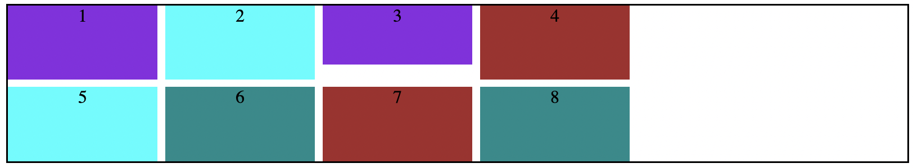 Le tableau se positionne au début du container.
- justify-content: end 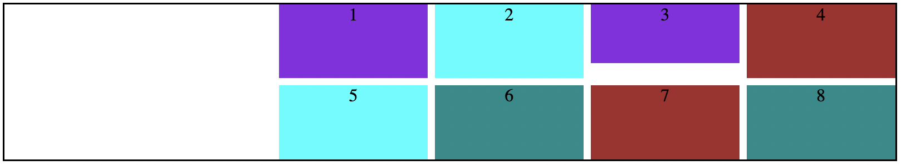 Le tableau se positionne à la fin du container.
- justify-content: center 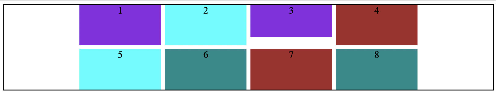 Le tableau se positionne au milieu du container.
La propriété align-content permet de faire la même chose verticalement.
D'autres propriétés existent mais elles s'appliquent cette fois aux éléments du tableau. Par exemple, on peut donner quelques propriétés à l'élément <div class="first">Premier élément</div>:
.first {
background-color: blueviolet;
justify-self: center;
align-self: center;
}Ici on a trois propriétés, background-color permet de modifier la couleur de la cellule du tableau. justify-self permet de centrer horizontalement l'élément dans la cellule tandis que align-self permet de centrer l'élément verticalement dans la cellule.
Les tableaux sont donc un moyen simple permettant de gérer la mise en place de la page, on peut créer des colonnes, des lignes de la taille que l'on souhaite en y mettant les éléments voulus.
3. Les Flexbox
Qu'est ce que c'est ?
Tout comme les Grid, les Flexbox sont des outils qui vont faciliter l'aménagement de la page web. Mais contrairement aux Grid, les Flexbox ne vont pas permettre une mise en place bidimensionnelle, mais seulement unidimensionnelle. Les Grid permettaient de faire des lignes et des colonnes en même temps, les Flexbox sont comme des boîtes, donc on ne peut faire soit que des colonnes soit que des lignes.
Avec une Grid : 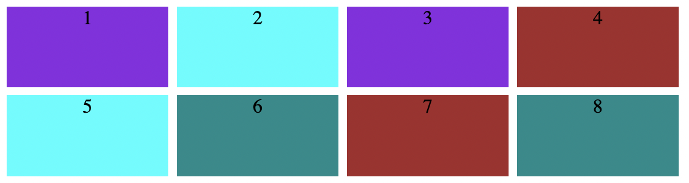
Avec une Flexbox :
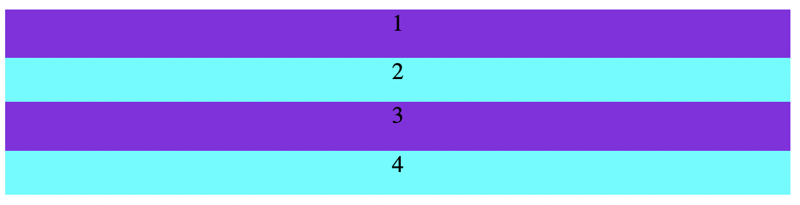
Créer une Flexbox
Voyons maintenant comment créer une Flexbox. D'abord, dans le fichier HTML, il faut créer un container dans lequel on ajoute les différents éléments qui constitueront la Flexbox. Pour cela on entre les lignes suivantes :
<div class="container">
<div>1</div>
<div>2</div>
<div>3</div>
<div>4</div>
</div>On a un bien un container et des éléments à l'intérieur.
Ensuite dans le fichier CSS, il faut spécifier que la div de class container est une Flexbox. Pour cela :
.container {
display: flex;
}Cela ressemble beaucoup à ce qu'on a fait pour la Grid. On précise ensuite si on souhaite créer une Flexbox en colonne ou en ligne grâce à la propriété flex-direction.
.container {
display: flex;
flex-direction: column;
}On obtiendra ici une Flexbox en colonne comme dans le premier exemple de Flexbox. Si on souhaite en créer une en ligne il faudra écrire : flex-direction: row;.
Ensuite, les éléments à l'intérieur du container, comme <div>1</div> ont eux aussi des propriétés. On peut par exemple parler de la propriété justify-content.
On peut attribuer à chaque élément du container une taille. Mais il se peut que la somme totale de ces tailles soit plus petite que la taille du container. Il y a donc de l'espace disponible comme ici par exemple :
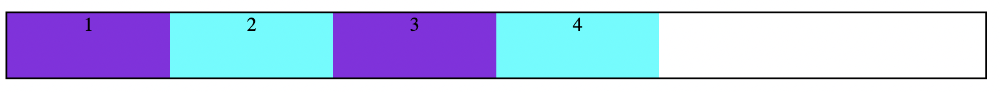
Avec justify-content on peut préciser comment on souhaite que nos éléments occupent l'espace dans le container.
- justify-content: start les éléments s'aligneront les uns à la suite des autres en commençant par le début du container, comme sur l'image ci-dessus.
- justify-content: end les éléments s'aligneront les une à la suite des autres en commençant par la fin du container. 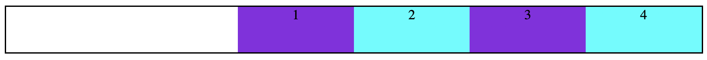
- justify-content: center les éléments seront centrés par rapport à la largeur du container. 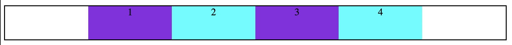
Il existe beaucoup d'autres propriétés qui peuvent être appliquées aux éléments de la Flexbox, mais je ne vais pas toutes les énumérer.
4. Ajustement manuel de la position d'un élément
Il est possible d'ajuster manuellement la position d'un élément sur la page, sans passer par des Grid ou des Flexbox. On utilise la propriété position. Cette dernière peut prendre plusieurs valeurs :
- static
- relative
- fixed
Static
Lorsqu'un élément possède la propriété position: static rien de particulier ne se passe, l'élément reste seulement là où il aurait du être.
Relative
Cette propriété permet d'attribuer un décalage de position à l'élément concernée relativement à la position qu'aurait du avoir l'élément. Par exemple le code suivant :
.item1 {
position: relative;
right: 100px;
bottom: 3px;
}Permet de passer de cette disposition : 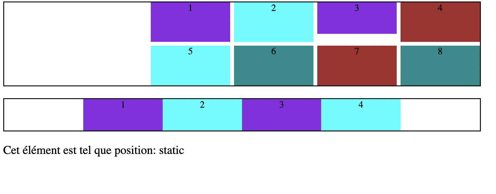
A celle ci où il y a eu un décalage de 100 pixels vers la droite et de 30 pixels vers le haut : 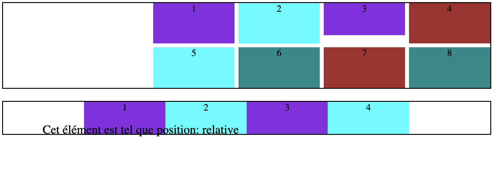
Fixed
On peut parfois vouloir qu'une image ou un texte reste au même endroit sur la page même si l'on scrolle, c'est le cas notamment pour les pubs. Pour faire cela, on donne à la propriété position l'attribut fixed.
Avantages et inconvénients
Grâce à la propriété position il est facile de placer un élément là où on le souhaite sans avoir à utiliser des outils comme les Grid ou les Flexbox qui peuvent paraître compliqués. L'inconvénient est que contrairement aux Grid et aux Flexbox, si l'on positionne un élément manuellement, il ne détecte pas la présence des autres éléments et il peut y avoir un chevauchement comme c'est le cas sur l'image illustrant la position relative.
5. Conclusion
Tout au long de ce MON, j'ai étudié les différents outils qui permettent de gérer la disposition d'une page web comme les Grid, les Flexbox et l'ajustement manuel de la position. Cela me permettra lors de mes différents projets de placer plus facilement les éléments là où je le souhaite.